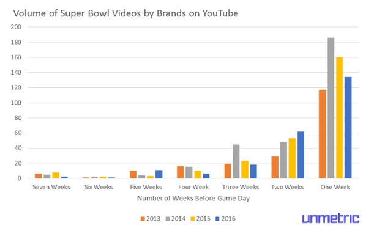

Feb 10, 2016
A version of this article first appeared on Social Times on February 5th, 2016. This article includes data up to February 8th so the numbers have changed slightly.
Can there be any bigger linchpin of a brand’s marketing calendar than the Super Bowl? An event that is as much about the advertising as it is about the game. For Super Bowl 50, CBS is charging $5 million for a 30-second spot, up from $2.5 million 10 years ago.
On social media, the uptick in brands creating Super Bowl content has been nothing short of incredible. This year, Unmetric tracked over 44,000 unique pieces of Super Bowl content published by brands before and during the Super Bowl. That's up from 30,000 pieces of content we tracked in 2015. On game day alone, brands published over 21,500 pieces of content.
Take a step back and think about that for a second. After what must be an exhausting six weeks of creating Super Bowl related content, content creators still needed enough inspiration within them to publish 21,500 more unique pieces of content on game day - more than they’ve published in the build up to the game!
Here’s how the total amount of content published on social media around the Super Bowl has changed over the years. Unsurprisingly, the week before game day sees a frantic amount of content being published.
What’s also interesting is how important the second and third weeks from game day have become. Brand’s are ramping up their Super Bowl campaigns earlier and earlier. In 2016, we’ve seen brands taking the Super Bowl even more seriously with more content being published as far out as five weeks before the big game.
As mentioned above, on game day, more content is published on social media about the Super Bowl than in the weeks leading up to the game. The biggest winner of the content explosion has been Twitter, suggesting that any reports of the demise of the social network are greatly exaggerated.
Since 2012, Twitter has seen an 862% increase in the amount of Super Bowl content being published by brands on game day. In 2016, brands sent a staggering 17,000 tweets on the day of the Super Bowl, a 45% increase on the year before.
Facebook and Instagram have all seen steady increases over the last four years. Super Bowl related brand content on Instagram during game day has increased by 439% while on Facebook it has grown by 190%.
Overall, we’ve seen an 862% increase in Super Bowl brand content being published on game day compared to 2012. Last year, brands posted 35% more content on game day than they did in 2015.
Although the chart above tells us that the amount of content brands publish around the Super Bowl on game day, in the lead up to the big day, the amount of content brands published actually dipped in 2015.
This dip was most pronounced on Facebook where there were 375 less posts published about the Super Bowl in the seven weeks before the game. In 2016, brands published 55% more content in the run up to the Super Bowl over 2015.
On Twitter, brands are doing the opposite of what they are doing on Facebook. Here, brands are publishing more content than ever before. If the last few weeks have been anything to go by, brands are about to break all the records for amount of content published around the Super Bowl this year.
On Instagram, the volume of content that was published around the Super Bowl in the lead up to game day hasn’t changed too drastically. As with Facebook, 2014 saw slightly more content being published on Instagram compared to 2015. Ultimately 2016 saw the most amount of Super Bowl content being created on Instagram, show casing the importance marketers place on the youngest of social networks.
This year we saw more brands than ever publishing their Super Bowl videos two weeks before the game. In the week before the Super Bowl there was a significant decline in the number of Super Bowl related videos being published.

It’s clear that brands are tweaking their content publishing strategies when it comes to the Super Bowl. In 2014, brands focused on creating more content in the build up to the big day, but that strategy changed in 2015. Brands published less content in the run up to the Super Bowl but took to Twitter in the hundreds on game day to publish more Super Bowl content on one day than they had in the prior seven weeks.
This report was put together using the content published by over 40,000 brands and captured by Unmetric. Content that included mentions of the Super Bowl or common words associated with the Super Bowl like SB49 or Big Game were used to compile the data on publishing volumes.
Get interviews from your peers and industry experts, advice on social analytics and analyst debriefs of thought leaders delivered directly to your inbox.
clicking on ".more" toggles class "visible" on ".nav-main-dd"
clicking on ".testimonial-content--2 .testimonial-link" removes class "is-active" on ".testimonial-content--3"
clicking on ".testimonial-content--2 .testimonial-link" adds class "is-active" on ".testimonial-content--2"